这套图为什么值得单独建库：市面上的模型架构图（论文图、公众号图）绝大多数是"概念图"——画到 Attention/FFN 这个颗粒度就停了。这套图是推理部署视角的数据流图：从 HuggingFace config.json 和 transformers 源码逆向画出，每一条边都标了张量形状
[seq_len, hidden_size]，每一个权重矩阵都标了具体维度，还画出了论文里通常不画的推理工程细节（KV cache 放哪、MLA 的权重吸收 absorb 技巧、prefill 与 decode 两种模式的区别）。看懂一张，等于把这个模型"在 GPU 上怎么跑"过了一遍脑子。
【事实】全系列图共用一套画法，掌握一次全部通用：
Text → Tokenizer → Embedding → N×(前几层 Dense 层) → M×(MoE 层) → RMSNorm → LM-Head → MTP。每层内部结构画在虚线框里（Attention 模块 + FFN/MoE 模块，各带残差连接 ⊕）。[seq_len, heads, qk_head_dim]。这是这套图最大的价值——照着形状就能手推每一步矩阵乘的计算量和显存占用。【观点】读这套图的正确姿势是"横着比"：同一个部位（比如 Attention 虚线框）在 11 张图里换了什么、没换什么，就是 2025-2026 开源模型演化的全部主线。下面第一节先给横切结论，再逐张讲。
【事实】11 张图放在一起，MoE 部分高度趋同（256~896 个细粒度专家 + 1~2 个共享专家 + top-k 路由，激活比普遍压到 3~6%），FFN 清一色 SwiGLU，Norm 清一色 RMSNorm。真正的分歧全部集中在 Attention 模块——因为长上下文时代，attention 的 KV cache 和计算量是推理成本的大头。
【事实】四条技术路线（按图中出现归类）：
| 路线 | 白话解释 | 代表模型 | KV cache 成本 |
|---|---|---|---|
| GQA 全注意力 | 最经典做法：多个 Q 头共用少数 KV 头，压缩 cache 但每个历史 token 都算 | MiniMax M2.5、Step 3.5 Flash（+滑窗）、Qwen3-VL | 中（随上下文线性涨） |
| MLA 低秩压缩 | 把 KV 先压成一个 512 维的"压缩包"存起来，用时再解压/或干脆在压缩域里算 | DeepSeek V3、Kimi K2、K2.5 | 低（每 token 只存 512+64 维） |
| DSA/CSA 稀疏注意力 | 在 MLA 基础上再加一个轻量"索引器"，每个 token 只挑最相关的 top-k 个历史 token 算注意力 | DeepSeek V3.2、GLM-5、DeepSeek V4 | 低 + 计算量从 O(L²) 降到 O(L·k) |
| 线性/混合注意力 | 大部分层改用 RNN 式线性注意力（状态固定大小、不随上下文膨胀），每隔几层留一层全注意力兜底 | Qwen3.5（DeltaNet 3:1）、Kimi K3（KDA 3:1）、Step 3.5（SWA 3:1） | 极低（线性层状态恒定） |
【观点】投研含义一句话：这四条路线是"推理单位成本"的四个档位。2026 年上半年国产旗舰集体从第一档往后三档迁移（GLM-5 弃 GQA 转 DSA、Qwen3.5 转线性混合、Kimi K3 转 KDA），方向是把"上下文越长越贵"这条成本曲线打平——这是 token 通缩（同等能力价格下行）的架构层驱动力，与 MaaS 定价、Agent 长任务经济性直接挂钩。谁能在 1M 上下文下把每 token 成本压到最低，谁就能在 Agent 时代打价格战。
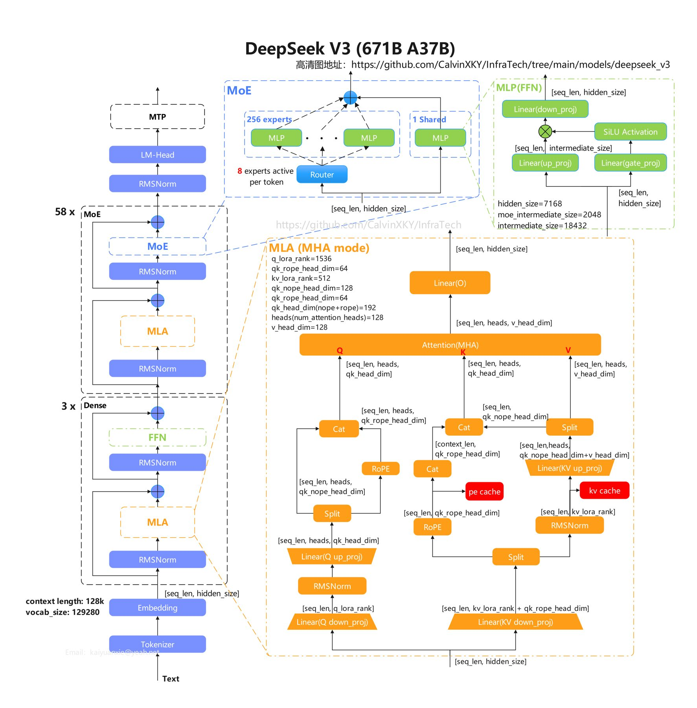
【事实】图上关键信息： - 主干：3 层 Dense + 58 层 MoE，128K 上下文，vocab 129280。 - MoE 放大框：256 个路由专家 + 1 个共享专家，每 token 激活 8 个；hidden_size=7168，单专家 moe_intermediate_size=2048（Dense 层 FFN 是 18432）——"很多小专家"而非"少数大专家"，是 DeepSeek 定义、后被全行业抄走的细粒度专家范式。 - MLA 放大框（MHA mode，即 prefill 阶段画法）：Q 和 KV 都走"先降维再升维"的低秩瓶颈——Q 压到 q_lora_rank=1536，KV 压到 kv_lora_rank=512；RoPE 位置信息单独走一条 64 维的小通道（qk_rope_head_dim=64），与内容通道（nope 128 维）分离；图右侧两个红块 pe cache + kv cache——推理时只缓存 512 维压缩 KV + 64 维位置键，而不是 128 头×两份×128 维的完整 KV，这就是 MLA 省显存的本质。 - heads=128，qk_head_dim=192（128 nope + 64 rope），v_head_dim=128。
【观点】看点：这张图是理解后面所有图的钥匙——Kimi K2/K2.5 直接继承它，V3.2/GLM-5 在它上面加稀疏索引，V4 把它推向极端。MLA 的第一性逻辑：注意力头之间的 KV 信息高度冗余 → 用低秩分解把冗余压掉 → 显存省一个数量级，代价是多两次小矩阵乘（用算力换显存，而算力比显存带宽便宜）。
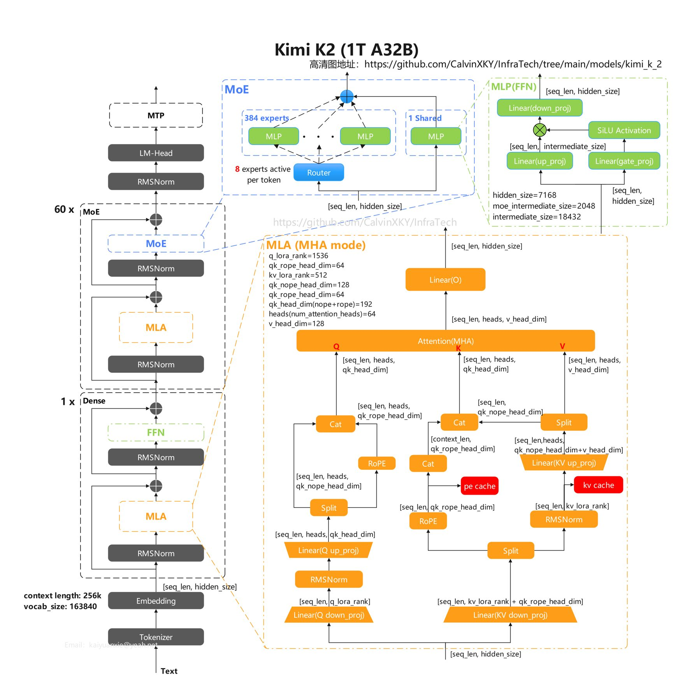
【事实】图与 V3 逐块对照，结构完全一致，只改参数：专家数 256→384（总参数 671B→1T 的主要来源）、attention heads 128→64（砍半，长上下文时省 attention 计算）、Dense 层 3→1、vocab 129280→163840、上下文 128K→256K。每 token 仍激活 8 专家，MLA 超参（kv_lora_rank=512 等）原样保留。
【观点】看点：K2 证明了"抄对作业 + 只动刀在专家数和头数"就能做出旗舰。头数砍半是长上下文成本考量（attention 计算量∝头数），专家数×1.5 是能力容量考量（总参数涨、激活参数反而 37B→32B 略降）——"总参数涨、激活参数不涨"是 MoE 时代做大模型的标准姿势：容量用稀疏堆，成本用激活控。
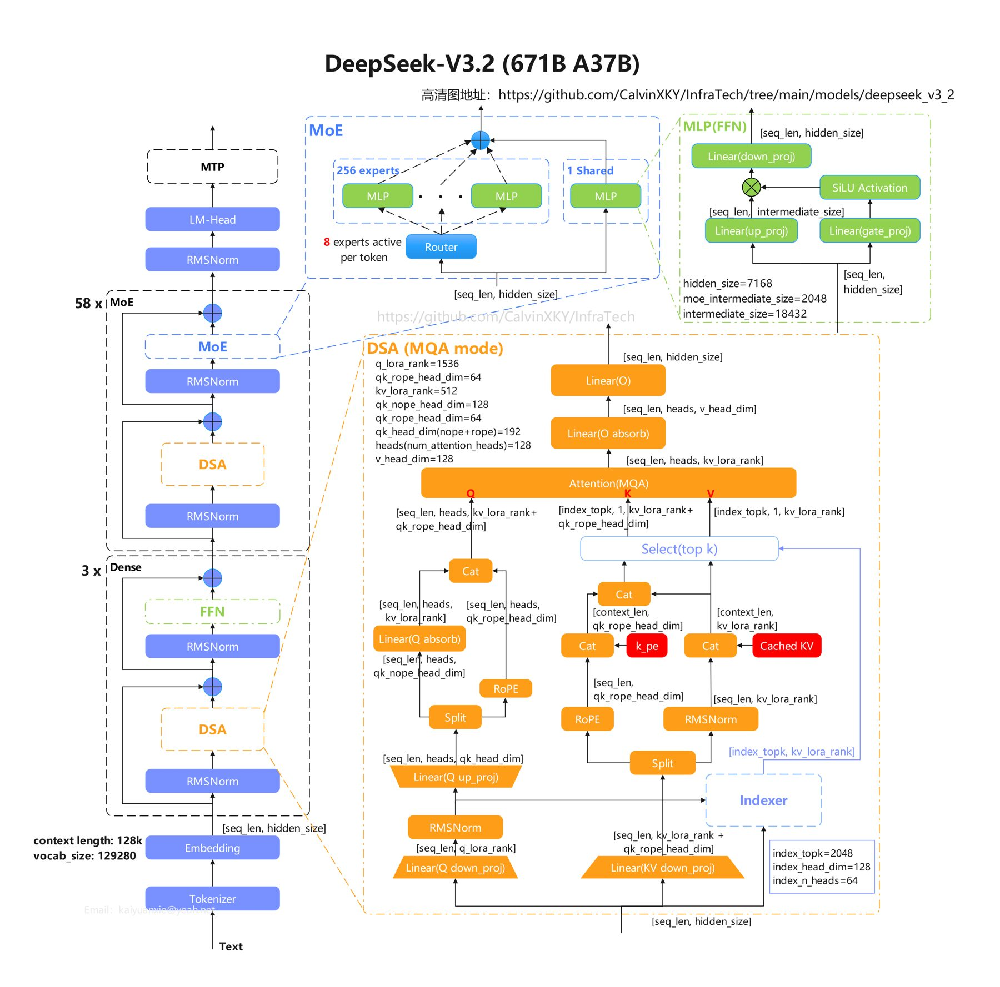
【事实】主干与 V3 完全相同（3 Dense + 58 MoE、参数量不变），唯一改动：MLA 虚线框换成 DSA。放大框里多出两个新部件：
- Indexer（右下蓝色虚线框）：一个轻量打分头（index_n_heads=64、index_head_dim=128），对每个 query 给所有历史 token 打相关性分；
- Select(top k)：按打分挑 index_topk=2048 个最相关历史 token，只把这 2048 个的压缩 KV 喂给注意力。
- 注意力主体仍是 MLA 的 MQA-absorb 形态（Q absorb / O absorb，在 512 维压缩域里算），K/V 输入形状从 [context_len, ...] 变成 [index_topk, ...]——这就是"稀疏"落在张量形状上的直接证据。
【观点】看点：DSA 的第一性逻辑——上下文很长时，绝大多数历史 token 对当前预测没贡献，与其全算（O(L²)），不如先用一个便宜的小模型（indexer）筛出 top-2048 再精算（O(L·k)）。上下文越长省得越多，128K 时注意力计算量约省 98%。代价是 indexer 本身要全量打分（但它是单头级别的轻量计算 + FP8 量化，图中 q_fp8/k_fp8 块可见）。
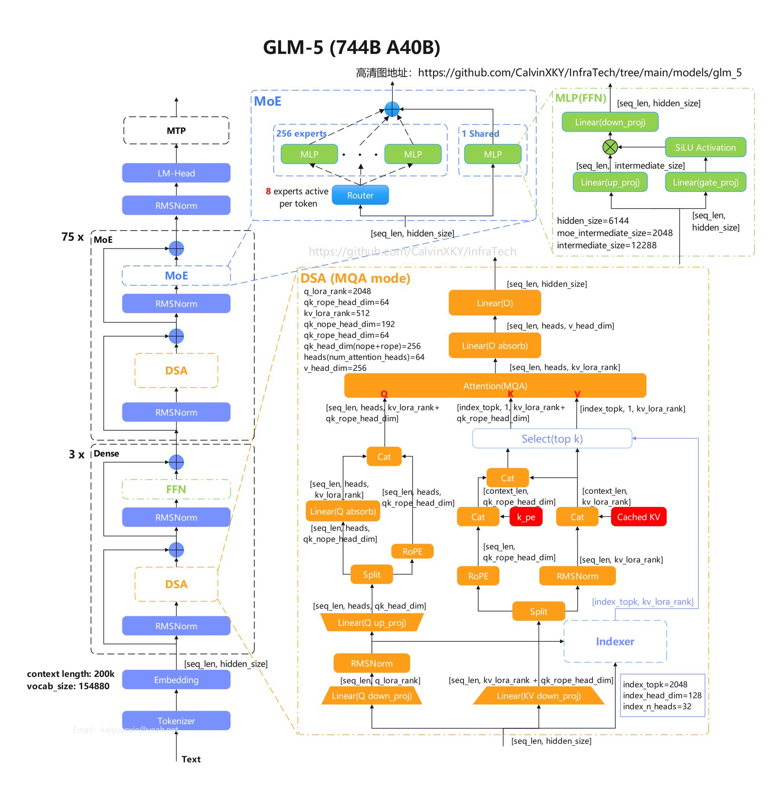
【事实】图上关键信息（注意：图标题为 744B，目录 README 写 774B 系笔误，以图和官方 config 为准）： - 主干：3 层 Dense + 75 层 MoE（比 V3.2 的 58 层深），200K 上下文，vocab 154880。 - MoE：256 专家 + 1 共享、激活 8 个，与 V3 完全同构；hidden_size=6144（比 V3 的 7168 瘦），Dense FFN intermediate=12288。 - DSA 放大框：与 V3.2 的 DSA 几乎逐块相同——同样的 Indexer（index_topk=2048、index_head_dim=128）+ Select(top k) + MQA absorb 主体，同样的 Cached KV 红块。差异在超参：q_lora_rank=2048（V3.2 是 1536）、heads=64（V3.2 是 128，学了 Kimi 的砍半）、qk_nope_head_dim=192 / v_head_dim=256（单头更宽）。 - 从 GLM-4.x 的 GQA 直接跳到 DSA，是国产模型里第一个整建制采用 DeepSeek 稀疏注意力路线的旗舰。
【观点】看点：GLM-5 这张图的信息量在于"它选择了谁的哪个零件"——MoE 抄 V3（256+1/激活8）、稀疏注意力抄 V3.2（DSA 整套）、头数砍半学 K2（64 头）、然后自己把网络加深（75 层）加瘦（6144 hidden）。【观点·投研】这印证一个判断：DeepSeek 的架构开源事实上成了国产大模型的"公共技术底座"，头部玩家的架构差异化在收敛，竞争重心移向数据、RL 后训练和工程化——看架构图已经越来越难分出谁是谁，这对"算法护城河"叙事是减分项，对"执行力/数据飞轮"叙事是加分项。
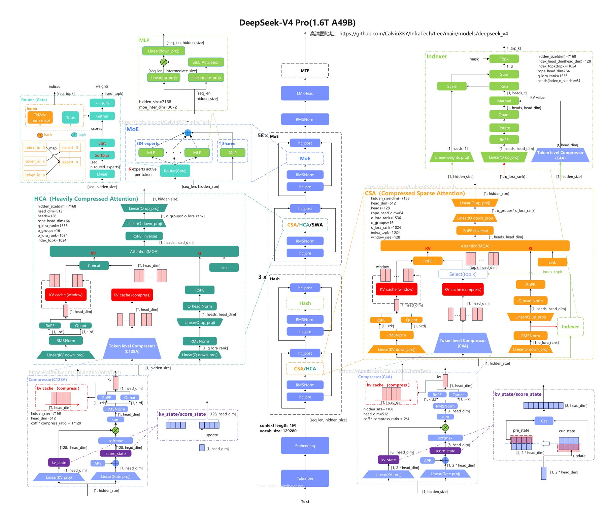
【事实】图上关键信息（这张图信息密度全系最高）： - 主干：3 层 Hash 块 + 58 组 MoE 块，上下文直接标到 1M，vocab 129280；MoE 升级为 384 专家、每 token 激活 6 个、带 hash 路由的 Router(Gate)（左上角放大框：token_id 经 hash map 映射专家，Sigmoid+Topk 选择）。 - Attention 不再是单一模块，而是 CSA / HCA / SWA 三种混排： - CSA（Compressed Sparse Attention，右侧橙框）：V3.2 DSA 的进化版——Token level Compressor（C4A，4 个 token 压成 1 个压缩 KV，coff×compress_ratio=2×4）+ Indexer（index_topk=1024）+ 滑窗 KV cache（window_size=128）双轨：近处细看（窗口内全量）、远处粗看（压缩+top-k 检索）。 - HCA（Heavily Compressed Attention，左侧绿框）：更激进的 C128A——128 个 token 压成 1 个，配合 KV cache(window) + KV cache(compress) 两级缓存，处理超远距离上下文。 - 图下方两个 Compressor 放大框画出了压缩器内部：kv_state/score_state 状态累积 + softmax 加权求和，本质是把一段 token "摘要"成一个向量。 - heads=128、head_dim=512、o_groups=16、q_lora_rank=1536；另有 sink token（图中 Q 侧小块）稳定长上下文。
【观点】看点：V4 回答的问题是"1M 上下文怎么才能算得起"——答案是分级压缩：128 token 窗口内全精度、中距离 4:1 压缩 + top-1024 检索、超远距离 128:1 重压缩。类比人的记忆：工作记忆全保真、近期记忆摘要、远期记忆只留梗概。【观点·投研】这张图是"长上下文成本工程化"的教科书——1M 上下文的 Agent 任务（整个代码库、整季财报堆）单位成本能否打平 128K 时代，决定 Agent 订阅的毛利结构，值得对照各家 API 的 1M 定价验证。
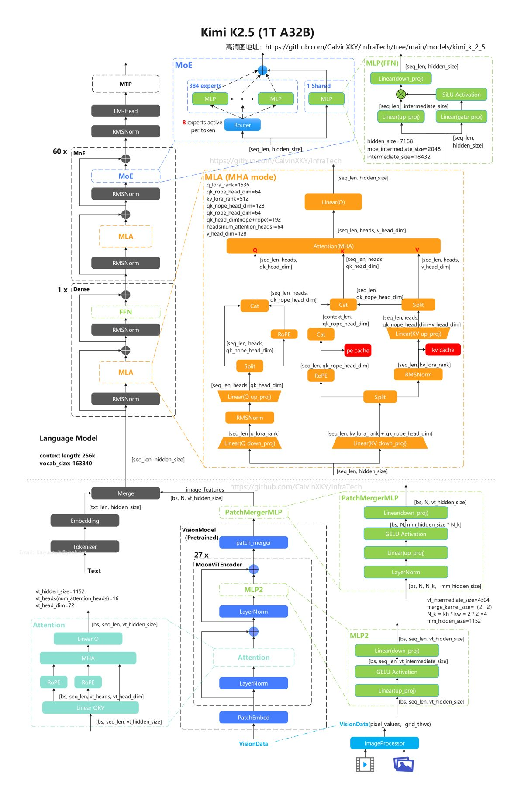
【事实】图分上下两半：上半 Language Model 与 K2 完全一致（384+1 专家、激活 8、MLA 64 头、256K）；下半新增 VisionModel——27 层 MoonViT Encoder（vt_hidden_size=1152、16 头、LayerNorm+GELU 的经典 ViT 配方，图中标注 Pretrained），图像经 ImageProcessor → PatchEmbed → 27×编码 → PatchMergerMLP（2×2 相邻 patch 合一，N_k=4，mm_hidden_size=1152→投到文本 hidden 7168）→ 与文本 embedding 在 Merge 处拼接进语言模型。
【观点】看点：这是"外挂式多模态"的标准图纸——语言模型冻结不动，视觉塔单独预训练后经一个 MLP 适配器接入。视觉 token 与文本 token 之后完全同权走 MoE+MLA，没有任何视觉专用层。对比下面 Qwen3-VL 的 DeepStack 多层注入，K2.5 是最简接法。
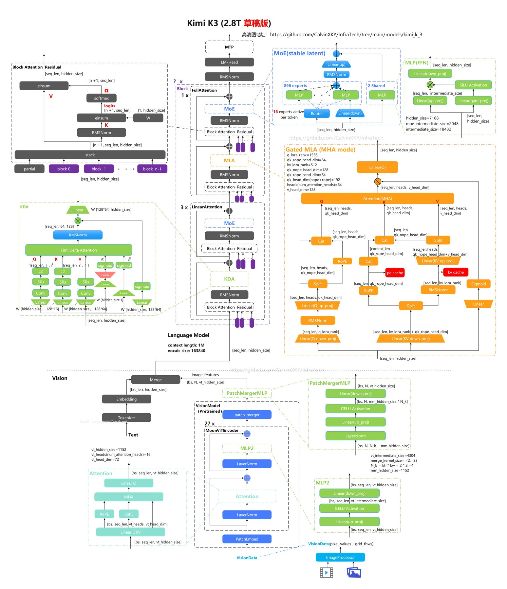
【事实】图标注"草稿版"（权重与技术报告发布前作者按已知信息先画，转录时注意此图为 C 级待定稿）： - 容量拉满：896 个路由专家 + 2 个共享专家、每 token 激活 16 个，MoE 还带 stable latent 结构（专家计算夹在 Linear(down)/Linear(up) 之间的低维潜空间里做）；2.8T 总参数、1M 上下文。 - Attention 混排：1 层 FullAttention（Gated MLA）: 3 层 LinearAttention（KDA）。KDA 放大框（左中绿框）：Kimi Delta Attention——Q/K/V 各走 Conv+SiLU+L2 归一，α/β 两条 sigmoid 门控，本质是带遗忘门的 RNN 式状态更新（delta rule），状态大小固定，不随上下文长度膨胀。 - Gated MLA 框：K2 的 MLA 加了输出门（Sigmoid⊗，图右侧新增支路）。 - 每个块还有 Block Attention Residual（左上灰框）：跨块的注意力残差旁路（einsum 聚合各 block 输出），是这张图独有的新部件。 - 视觉塔与 K2.5 相同（27 层 MoonViT）。
【观点】看点：K3 与 Qwen3.5 殊途同归——都押注"3/4 的层用线性注意力扛量、1/4 的层用全注意力保质"。1M 上下文下，线性层的 KV 成本为零（固定状态），只有 1/4 的层还在花 cache 钱。【观点】2.8T/激活16专家的组合说明 Kimi 在赌"容量堆到极致 + 成本用线性注意力打平"两头吃，是 11 张图里最激进的配置；定稿后值得重点核对激活参数量。
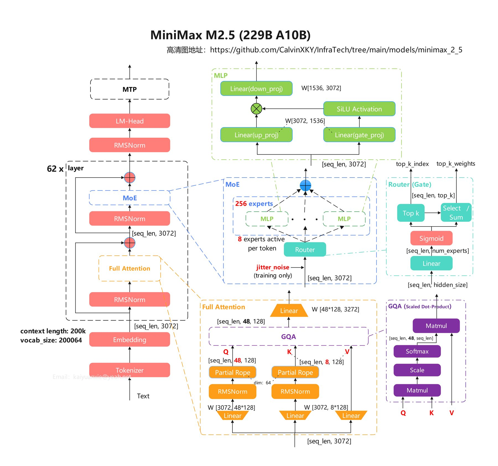
【事实】图上关键信息：62 层清一色同构（无 Dense/MoE 分段、无混合注意力）：Full Attention = 纯 GQA（Q 48 头 / KV 8 头、head_dim=128、Partial RoPE 64 维）+ MoE（256 专家、激活 8、专家 intermediate 仅 1536、带 jitter_noise 训练正则）。hidden_size=3072（全系最瘦），200K 上下文，vocab 200064。图右侧 Router 放大框：Sigmoid 打分 + Top-k + Select/Sum，标准配方。
【观点】看点：M2.5 是"工程保守主义"样本——2026 年了还用最老实的 GQA，但把激活参数压到 10B（全系最低），用"瘦身"而不是"稀疏注意力"实现低成本。MiniMax 此前在 M1 上试过 Lightning Attention（线性路线先驱），M2 系回撤到 GQA。【观点】这与其"性价比 API + 海外 Agent 产品"的商业定位自洽：A10B 意味着单卡并发高、serving 简单稳定，牺牲的是超长上下文的成本曲线（GQA 的 cache 随长度线性涨）——200K 封顶也印证了这一点。
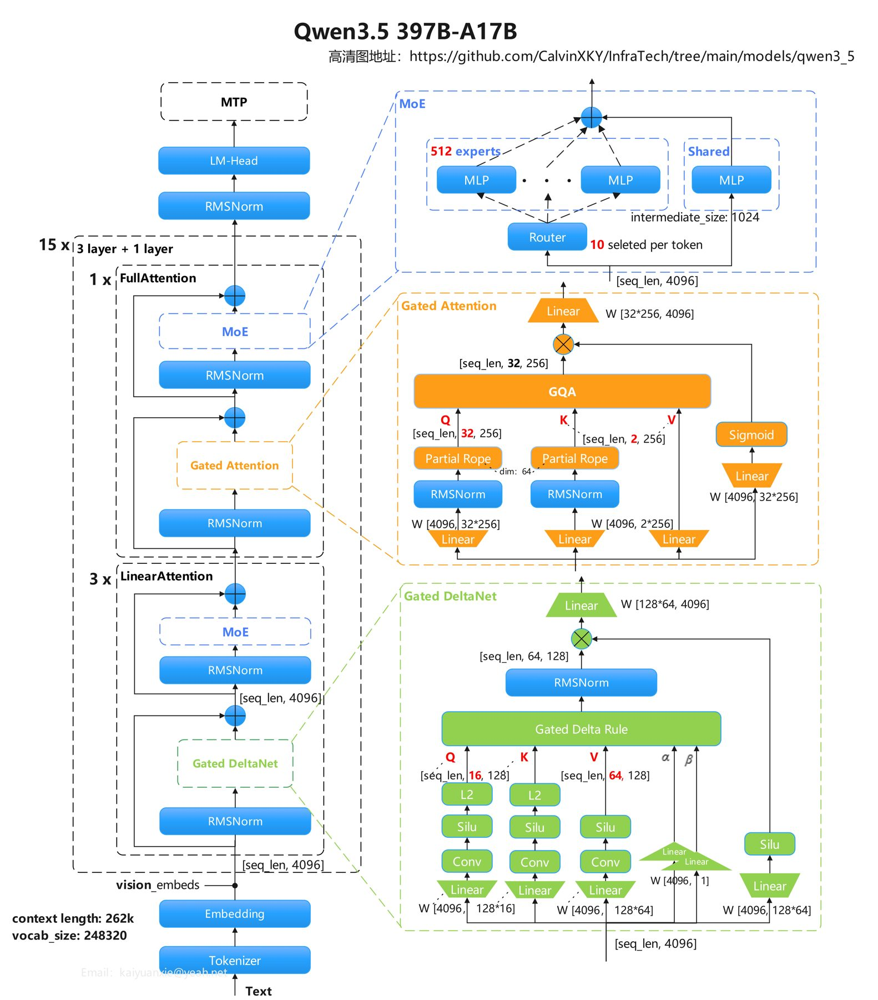
【事实】397B-A17B 图上关键信息： - 15×（3 层 LinearAttention + 1 层 FullAttention）的 4 层循环节，共 60 层；262K 上下文，vocab 248320（全系最大词表）。 - LinearAttention 层 = Gated DeltaNet（绿框）：Q/K 16 头、V 64 头，各走 Conv+SiLU（+Q/K 加 L2 归一），α/β 门控，Gated Delta Rule 状态更新——与 Kimi K3 的 KDA 同宗（都源自 DeltaNet 线性注意力家族）。 - FullAttention 层 = Gated Attention（橙框）：GQA（Q 32 头/KV 2 头、head_dim=256）+ 输出 Sigmoid 门。 - MoE：512 专家、每 token 选 10 个、专家 intermediate 仅 1024——比 DeepSeek 更细更碎的专家切法。 - 主干还标了 vision_embeds 入口（为 VL 版预留）。27B 版（第二张图）是同配方的 Dense 化：MoE 换回大 FFN（intermediate 17408→25600），GQA 24 头/KV 4 头，供端侧/低成本档。
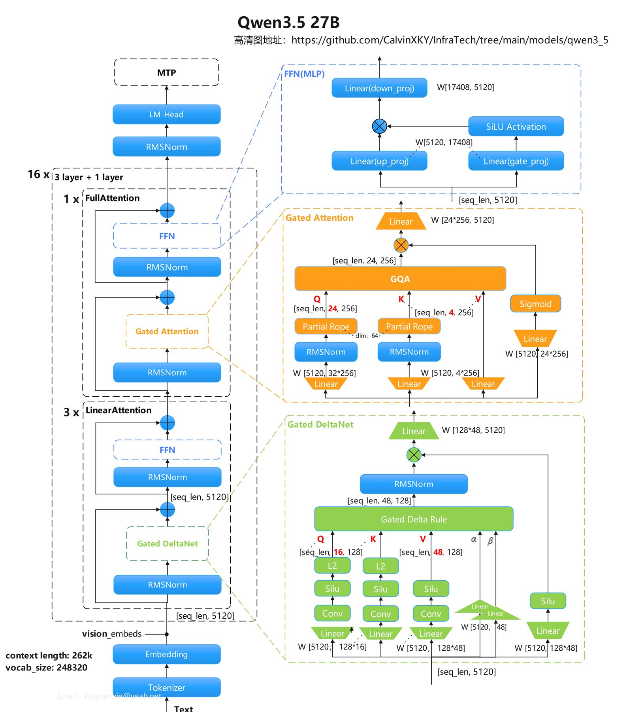
【观点】看点：Qwen3.5 与 Kimi K3 独立收敛到同一个 3:1 混合比，基本可认为"线性:全注意力=3:1"是当前工程共识甜点。A17B + 3/4 层零 cache，是"高并发低价 serving"的架构底子。【观点·投研】阿里的打法是全尺寸覆盖（27B Dense 到 397B MoE 同配方），架构上为云上推理成本而生——与其云业务"卖 token 不如卖吞吐"的逻辑一致。
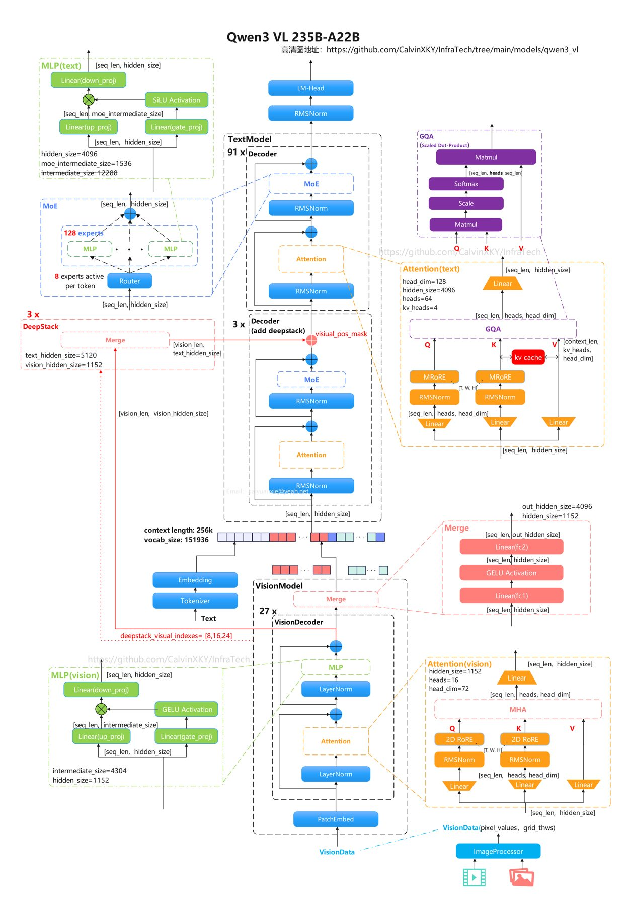
【事实】235B-A22B 图上关键信息（2025-10 发布，图中语言塔仍是 Qwen3 世代的纯 GQA+MoE，无线性混合）： - TextModel：91 层 Decoder（GQA 64 头/KV 4 头 + MoE 128 专家激活 8）+ 3 层"Decoder(add deepstack)"。 - VisionModel：27 层 VisionDecoder（1152 hidden、16 头、2D RoPE）+ Merge（fc1+GELU+fc2 投到文本 4096）。 - DeepStack（红色虚线框，本图独有）：视觉特征不是只在入口注入一次——deepstack_visual_indexes=[8,16,24]，把视觉塔第 8/16/24 层的中间特征分别旁路注入语言模型的前 3 层（visual_pos_mask 对齐位置）。浅层视觉特征保留细节（纹理/小字），深层特征提供语义，多层注入让语言模型同时拿到两者。 - Attention(text) 框里 MRoPE（多模态 RoPE：时间/宽/高三轴 T,W,H 分频段编码）替代普通 RoPE。
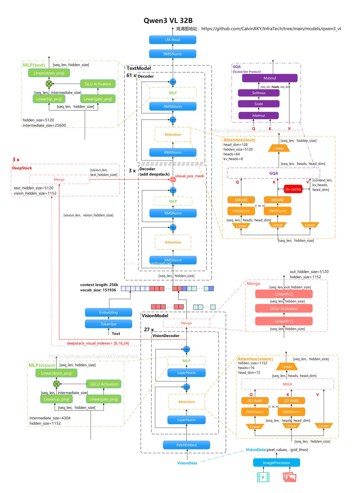
【事实】32B 版：61 层 Dense（GQA 64/8 头、hidden 5120、FFN 25600），视觉塔与 235B 完全相同——视觉部分是可复用组件，语言塔按档位换。
【观点】看点：与 K2.5 的"单点接入"对照，DeepStack 是"多层浇灌"。代价是训练/推理管线更复杂，收益是细粒度视觉任务（OCR/图表/文档）更强——Qwen 系一贯把文档理解当主打场景，架构选择与产品定位对得上。
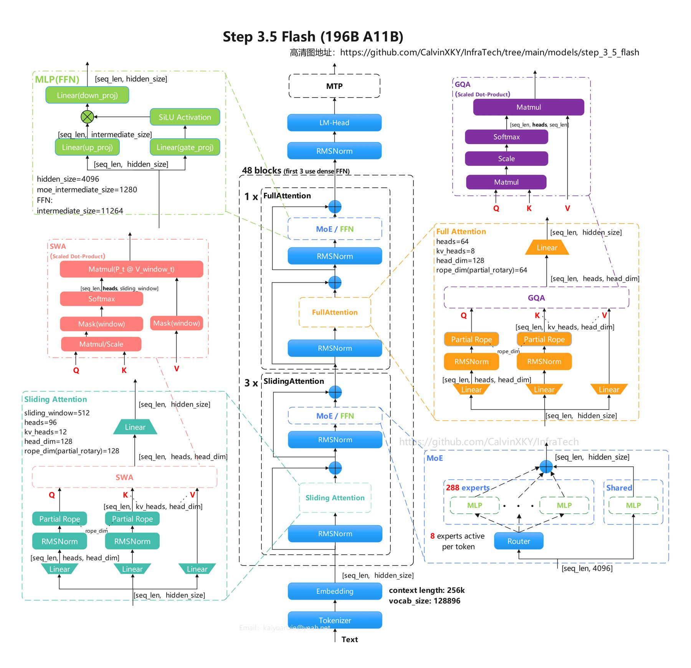
【事实】图上关键信息： - 48 blocks，循环节 = 3 层 SlidingAttention + 1 层 FullAttention；前 3 块用 Dense FFN，其余 MoE（288 专家、激活 8、专家 intermediate 1280）；hidden 4096、256K 上下文。 - SlidingAttention（左侧红/青框）：SWA 滑窗注意力，sliding_window=512——每个 token 只看最近 512 个 token，Q 96 头/KV 12 头，Mask(window) 显式画出；KV cache 只需存窗口内。 - FullAttention（右侧橙框）：GQA 64 头/KV 8 头，负责跨窗口的长程依赖。 - MTP 照配。
【观点】看点：SWA 是"线性化"的第三种实现——不改注意力算法（仍是 softmax attention），只改可见范围。3:1 的混合比又一次出现（与 Qwen3.5、Kimi K3 相同），三家用三种不同机制（DeltaNet/KDA/SWA）收敛到同一个结构比例，进一步坐实 3:1 是工程甜点。A11B + 窗口 cache 恒定，同属"高并发低价"档。阶跃把它标成 Flash（快线产品），架构与定位一致。
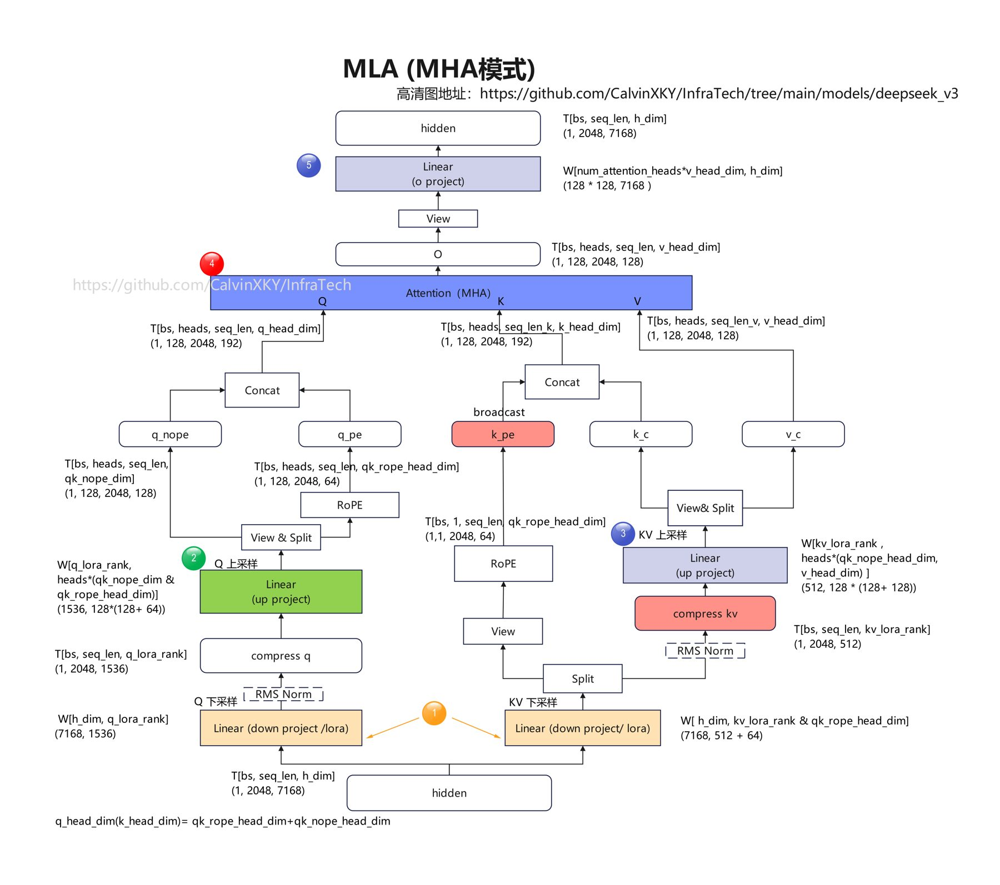
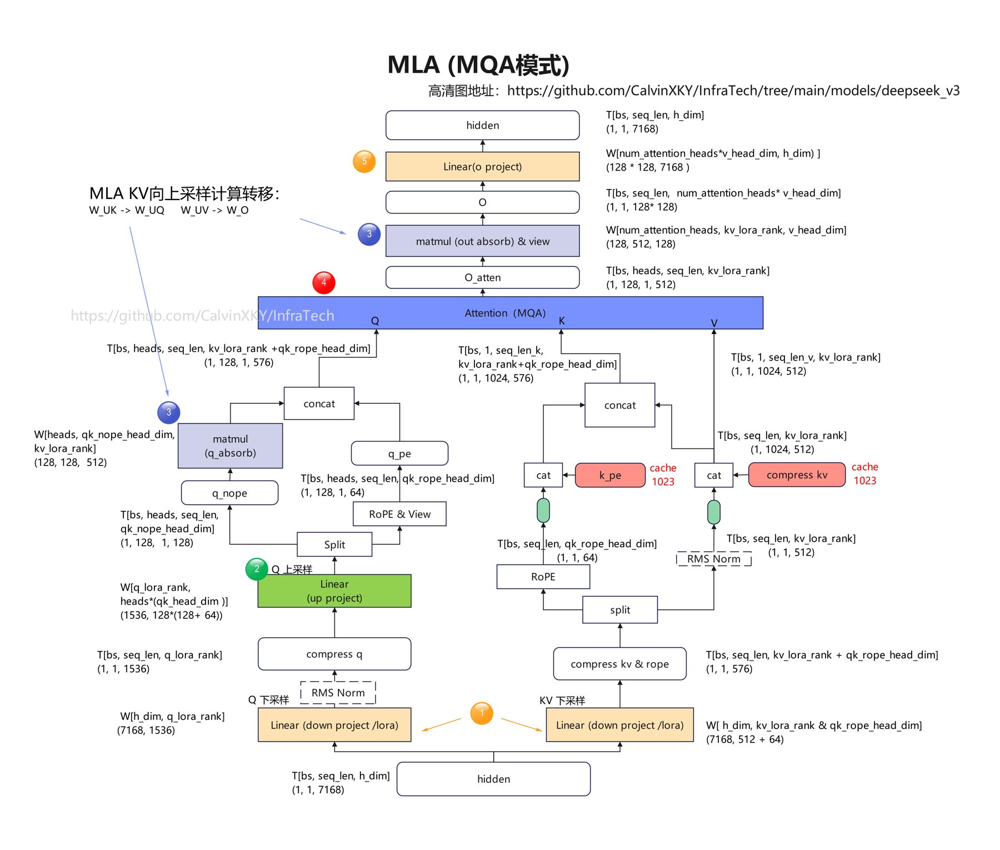
【事实】MLA 数学上等价于两种算法，部署时按阶段切换，这两张图分别给出全部张量形状（batch 例：seq_len=2048 vs decode 时 seq_len=1）： - MHA 模式（prefill 用）：把压缩 KV 用 KV up_proj 解压回 128 头完整 K/V，走标准多头注意力。一次算一大段 prompt 时计算密集，解压划算。 - MQA 模式（decode 用）：不解压——把 KV 上采样矩阵 W_UK 吸收进 Q 侧（图左上标注"KV向上采样计算转移：W_UK→W_UQ，W_UV→W_O"），注意力直接在 512 维压缩域里算，等效于所有头共享一个 512 维 KV 的 MQA。逐 token 生成时避免反复解压，省显存带宽。 - 图中 cache 1023/4095 等红字 = 已缓存的历史长度示例。
【观点】这两张图是全库最"工程"的两张——论文只告诉你 MLA 省显存，这两张图告诉你 vLLM/SGLang 里它实际怎么跑、为什么 prefill 和 decode 要走不同 kernel。理解了 absorb，才能理解为什么 MLA 的 decode 吞吐能做高。
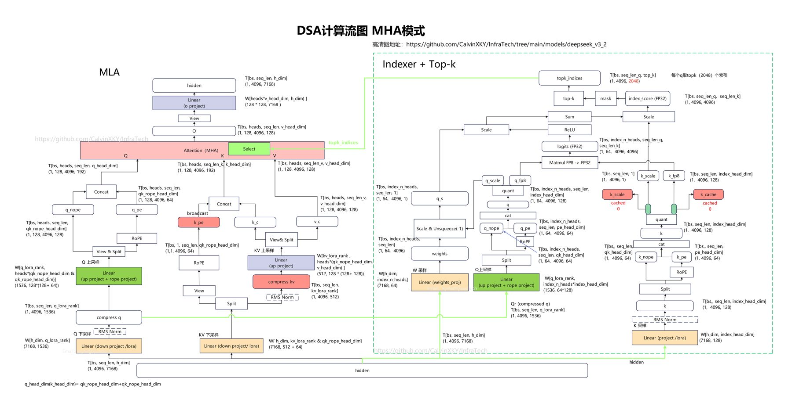
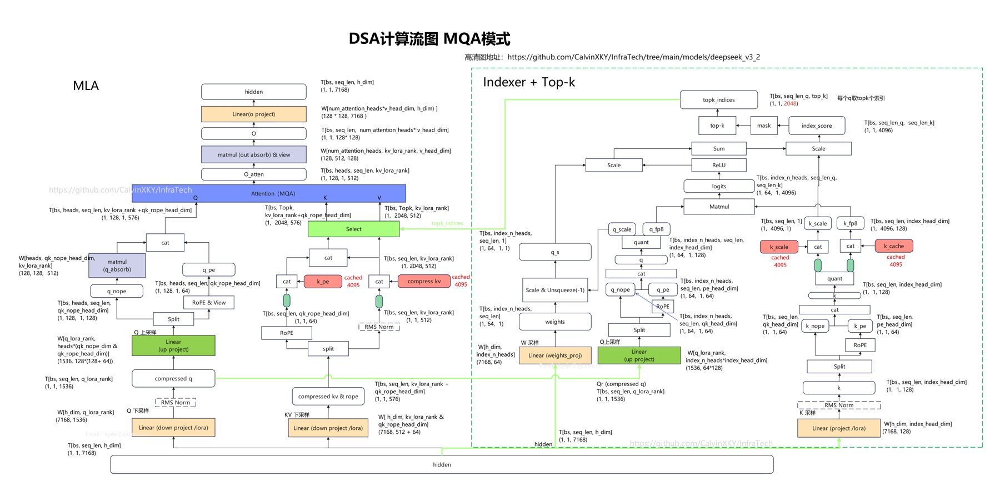
【事实】在 MLA 双模式基础上加 Indexer+Top-k 的完整数据流（MQA 图右半即 Indexer 放大）：Indexer 侧 q/k 各自过 RoPE 后 FP8 量化（q_fp8/k_fp8 + q_scale/k_scale 块），Matmul 出 logits → ReLU → 加权 Sum → Scale 得 index_score → mask → top-k 取 2048 个索引 → 回主路 Select 挑出对应压缩 KV。k_cache/k_scale 均缓存（红块，cached 4095）。 【观点】值得注意的工程细节：indexer 全程 FP8 + 单独小 cache——检索器必须比正主便宜一个数量级，这套图把"便宜在哪"画到了算子级。
| 模型 | 总参/激活 | 层结构 | Attention | 专家配置 | 上下文 | 每 token cache 特征 |
|---|---|---|---|---|---|---|
| DeepSeek V3 | 671B/37B | 3D+58MoE | MLA 128头 | 256+1 选8 | 128K | 512+64 维压缩 |
| Kimi K2 | 1T/32B | 1D+60MoE | MLA 64头 | 384+1 选8 | 256K | 同上 |
| DeepSeek V3.2 | 671B/37B | 3D+58MoE | DSA(MLA+top2048) | 256+1 选8 | 128K | 压缩+稀疏读取 |
| GLM-5 | 744B/40B | 3D+75MoE | DSA(MLA+top2048) 64头 | 256+1 选8 | 200K | 压缩+稀疏读取 |
| DeepSeek V4 Pro | 1.6T/49B | 3Hash+58MoE | CSA/HCA/SWA 混排 | 384+1 选6 | 1M | 分级压缩(4:1/128:1)+窗口 |
| Kimi K2.5 | 1T/32B | K2+MoonViT27层 | MLA 64头 | 384+1 选8 | 256K | 同 K2 |
| Kimi K3(草稿) | 2.8T/? | 1Full:3Linear | KDA+Gated MLA | 896+2 选16 | 1M | 3/4 层固定状态 |
| MiniMax M2.5 | 229B/10B | 62 同构 | GQA 48/8头 | 256 选8 | 200K | 常规 GQA cache |
| Qwen3.5 397B | 397B/17B | 1Full:3Linear ×15 | GatedAttn+DeltaNet | 512+1 选10 | 262K | 3/4 层固定状态 |
| Qwen3-VL 235B | 235B/22B | 91+3DeepStack | GQA 64/4头 MRoPE | 128 选8 | 256K | 常规 + 视觉token |
| Step 3.5 Flash | 196B/11B | 1Full:3SWA ×12 | GQA+滑窗512 | 288+1 选8 | 256K | 3/4 层窗口恒定 |
modules/rope_principle.ipynb、kimi_k_2_5/vision_text_merge_demo.ipynb 为可运行的原理演示 notebook。